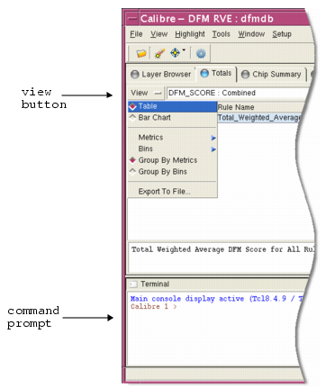

You can control the data displayed through a set of special-purpose annotations. In order for DFM results to display properly, the rule writer must insert commands that generate the required annotations. See “Writing Rules That Display in DFM Report Card”.
Note that Calibre RVE for DFM is invoked automatically with the -turbo option enabled (MultiThreaded mode) when it is loaded from a layout viewer (such as Calibre DESIGNrev). When Calibre RVE for DFM is invoked from Calibre Interactive DFM, the options in the Run Control section determine whether or not -turbo is enabled. You can set the environment variable MGC_RVE_DISABLE_TURBO to 1 to disable the -turbo option when Calibre RVE for DFM is invoked from a layout viewer or from Calibre Interactive DFM.

The View button is located in the upper left corner on all tabs except the Layers tab. When clicked, it displays a dropdown list of the following options:
Table | Bar Chart — Toggles the data field between table display (the default) and bar chart display.
Metrics —Selects the metrics to display in the data field. By default, all metrics are visible.
Bins — Selects the bins to display in the data field. By default, all bins are visible.
Group by Metrics | Group by Bins — Toggles column grouping. When Group by Metrics (the default) is selected, columns are grouped such that all bins are displayed for the first metric, then all bins for the second metric, and so on. When Group by Bins is selected, columns are grouped such that all metrics for the first bin are displayed, then all metrics for the second bin, and so on.
Export to File — Writes the current displayed data to either a tab-delimited (Report) or comma-delimited (CSV) file.
The command prompt provides a method of running Calibre YieldServer commands interactively. It can be enabled by choosing and selecting Terminal Pane. Click Apply, then Close.
All tabs except the Layers tab contain filtering controls that allow you to control how score data is displayed. By default, scores less than or equal to zero are not shown.
Area 1 — Select the group, priority (applies only to the Chip Summary tab), or rule (applies only to the Chip Summary, Cell Summary, and Window Summary tabs) and the bin and metric combination to apply filtering to.
For priority, specify “All”, “None”, or any of the defined priorities. “None” selects rules with empty priorities. “All” selects all priorities for all rules.
Area 2 — Choose the threshold operator to apply on the selected bin and metric combination. Operator choices are: greater than (>), greater than or equal to (>=), less than (<), less than or equal to (<=), or equal to (==).
Area 3 — Enter the threshold value to apply on the selected group and the bin and metric combination. Enter a blank value to apply no filtering.
Area 4 — Enter the number of result entries to show among those that pass the filter criteria (enter “*” to display all).
Area 5 — Choose whether to display results in ascending or descending order.
Area 6 — Click the Filter button to apply the currently displayed filter settings.
Note that none of these options, when changed, automatically update the display. You must click the Filter button to apply any changes you have made.
For example, to show the two highest scores on the entire chip:
Select the Chip Summary tab.
Select “All” groups, “All” priorities, and the “metric: Combined” value in area 1.
Choose “>=” in area 2.
Enter “0” in area 3.
Enter “2” in area 4.
Click the “up” button in area 5 to sort in descending order.
Click Filter.